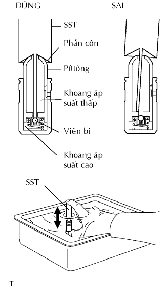
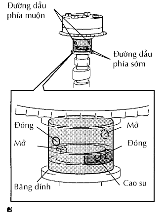
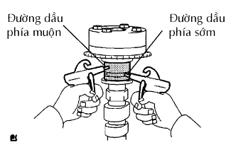
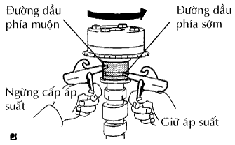
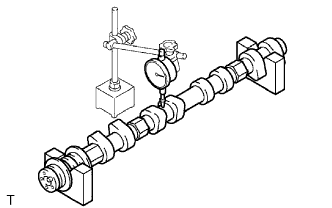
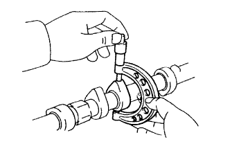
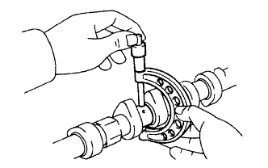
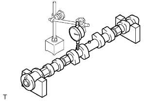

TRỤC CAM > KIỂM TRA |
| 1. KIỂM TRA BỘ ĐIỀU CHỈNH KHE HỞ XUPÁP |
|  |
Đặt bộ điều chỉnh khe hở xupáp vào khay chứa đầy dầu động cơ.
Cắm đầu của SST vào píttông của bộ điều chỉnh khe hở xupáp và dùng đầu này ấn viên bi một chiều xuống vào bên trong píttông.
Nén SST và bộ điều chỉnh khe hở xupáp vào nhau để dịch chuyển píttông lên xuống 5 đến 6 lần.
Kiểm tra sự dịch chuyển của píttông và xả khí.
Sau khi xả khí, hãy tháo SST. Sau đó, thử đẩy nhanh và chắc píttông bằng một ngón tay.
| 2. KIỂM TRA BÁNH RĂNG PHỐI KHÍ TRỤC CAM |
|  |
Kiểm tra sự khoá cứng của bánh răng phối khí trục cam.
Kẹp trục cam lên êtô và kiểm tra rằng bánh răng phối khí trục cam bị hãm cứng.
Nhả chốt hãm.
Bịt 4 đường dầu của cổ trục cam bằng băng dính như trên hình vẽ.
Làm thủng băng dính của đường dầu sớm và đường dầu muộn bên phía đối diện với lỗ của đường dầu sớm.
|  |
Cấp áp suất khí nén khoảng 200 kPa (2.0 kgf/cm2, 28 psi) vào các lỗ của đường dầu đã làm thủng băng dính ở quy trình trên.
|  |
Kiểm tra rằng bánh răng phối khí trục cam quay sang phía sớm khi giảm áp suất cấp vào đường muộn.
Khi bánh răng cam đạt tới vị trí muộn nhất, hãy ngừng cấp áp suất khí vào phía muộn rồi đến phía sớm theo đúng thứ tự.
Kiểm tra sự quay êm dịu.
Quay bánh răng phối khí trục cam trong phạm vi dịch chuyển của nó một vài lần, nhưng không được quay đến vị trí muộn nhất. Kiểm tra rằng bánh răng quay êm.
Kiểm tra sự khoá cứng của tại vị trí muộn nhất.
Chắc chắn rằng bánh răng phối khí trục cam bị khoá tại vị trí muộn nhất.
| 3. KIỂM TRA TRỤC CAM SỐ 1 |
|  |
Kiểm tra độ đảo của trục cam.
Đặt trục cam lên các khối V.
Dùng đồng hồ so, đo độ đảo tại cổ trục giữa.
|  |
Dùng Panme, đo chiều cao của vấu cam.
|  |
Dùng Panme, đo đường kính cổ trục.
| Cổ trục | Điều kiện tiêu chuẩn |
| Cổ trục số 1 | 35.949 đến 35.965 mm (1.4153 đến 1.4159 in.) |
| Các cổ trục khác | 26.959 đến 26.975 mm (1.0614 đến 1.0620 in.) |
| 4. KIỂM TRA TRỤC CAM SỐ 2 |
|  |
Kiểm tra độ đảo của trục cam.
Đặt trục cam lên các khối V.
Dùng đồng hồ so, đo độ đảo tại cổ trục giữa.
Dùng Panme, đo chiều cao của vấu cam.
Dùng Panme, đo đường kính cổ trục.
| Cổ trục | Điều kiện tiêu chuẩn |
| Cổ trục số 1 | 35.949 đến 35.965 mm (1.4153 đến 1.4159 in.) |
| Các cổ trục khác | 26.959 đến 26.975 mm (1.0614 đến 1.0620 in.) |